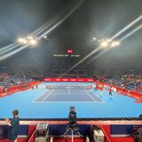
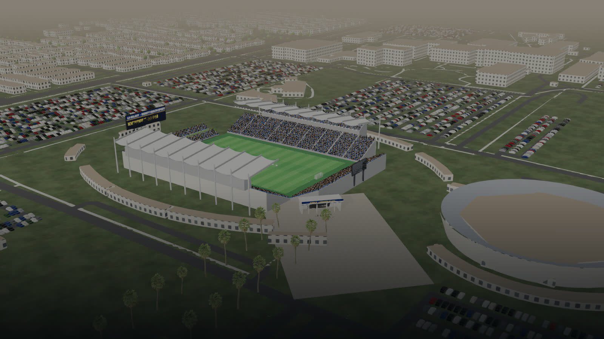
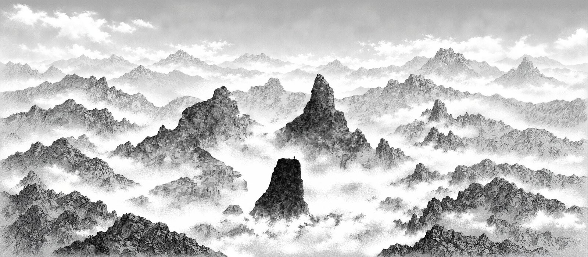

Video to Motion
How one YouTube clip becomes a body, a racket, a ball and a person on a court. What each step can do today, scored honestly, with every scene live on this page.
Where it stands
Judged on the viewing result, not a measured match. The bar is how close it looks to real; the line under it is why it is not a 10.
gold standard · Hawk-Eye SkeleTRACK, 29 body points and 7 racket points from stadium cameras
1 · Body motion
FlowHMR on Modal turns one clip into joints, shape and camera per frame. What you get depends on the footage, so this is organised by footage. Every scene below is the real one: drag to orbit, pinch to zoom, use the camera buttons, play the footage beside it.
- 1Clipone point, cut from YouTube
yt-dlp - 2Bodyjoints, shape, camera per frame
FlowHMR · Modal - 3Courtalign the body to the court lines
Python - 4Scenebody, racket, ball on the court
three.js


- camera: low, directly behind the server
- 4K 60 fps, 1080p 30 fps into the model
- player about 490 px tall in frame
The best footage of the project. Low and behind means the body is big and the swing plane is visible; this is the recipe every later point reuses.

- camera: low behind the baseline, both players in frame
- 4K 60 fps, 1080p 30 fps into the model
- serve contact partly above the frame
The only two-player point: serve out wide from the deuce side, approach, volley. Both bodies from one camera; the far player and hidden hands are less reliable. This is the point on the USTA page.
- camera: low behind the near player
- 4K 60 fps
- two players, served points with groundstrokes
Same recipe on matchplay. Serves and groundstrokes come through; the racket blurs at the fastest frames because this is 30 fps into the model.
- camera: low behind the near player
- 4K 60 fps
- returns and served points
Returns are the cleanest: a compact swing in front of the body, 4.8 px median on Cobolli.

- camera: court level behind the player
- 4K 60 fps
- one-handed slices at frames 145 and 312
Djokovic's slices were first labelled topspin; the contact rule needs the shot type right, so these were relabelled by eye.

- camera: low behind the baseline
- 4K 60 fps
- a return point
A clean return: 5.7 px median, the best Djokovic fit.

- camera: elevated broadcast, full court
- 1080p 50 fps into 1080p 30 fps
- player about 220 px tall
A body, but no usable wrist or face: the player is too small. Kept as a benchmark for court-pattern context only.

- camera: fixed club camera behind the baseline
- 1080p 30 fps
- one indexed point, charted shots
The only clip with a charted ball: tagged contacts and bounces from a Stanford dataset give the arcs; no racket solve.
2 · Racket
Three parts: a model, a detector, and a solver that moves the model through the arm. The weakest link is the footage frame rate.
- 1Modeltrace the outline, author strings, grommets, grip
Blender - 2Detectfive racket keypoints per frame where visible
RacketVision · Modal - 3Solvethrough forearm and wrist, spin capped at 2,500°/s
Python - 4Pin contactlabel 34 contacts, hold the face angle
by eye
- outline
8traced from manufacturer photos - strings and grommets
8woven bed, every string through its own hole - depth and sidewalls
5approximate, not CAD - paint and decals
6authored, not scanned
- camera: court level, side-rear
- 4K 120 fps: the only high-frame-rate clip
- 7 s of rallying
At 30 fps a fast swing is a blur and the detector loses the racket exactly at contact. At 120 fps it keeps it through contact and the follow-through: 81% of frames found against 32–40%. The single largest gain, and it cost nothing.


- racket found, 30 fps
432–40% of frames - racket found, 120 fps
881% of frames - fit where seen
74.7–12.5 px median per point - face angle at contact
5set by rule, not measured: from behind, open and closed look the same
3 · Ball
No model tracks the ball in 3D from one camera here. The ball is authored to events read off the motion: toss release, contact at the racket head, a landing inside the box, the next racket.
- in hand through the toss
9attached to the tossing hand - leaves the strings at contact
9at the racket head - lands where it should
7inside the deuce box; the exact spot is modelled - spin and true 3D flight
2not measured
4 · Appearance
Three ways to put a person on the motion. Each is scored the same way: motion is inherited, body and face are the generator's.
Plain FlowHMR body
- motion
8FlowHMR - body shape
2one body for everyone - face
1none - clothes
1none
Rodin body from three frames
- motion
8inherited from FlowHMR - body shape
6outfit matches, build close; the tank top is part of the mesh and bulges - face
2generated, not Shelton - hands
3the generated hand stays open under the grip
Meshy likeness
- motion
5library idles and mocap strokes, no finger bones - body shape
6a tennis player, not this one - face
3reads as a game character - hands
2mittens
- Eight Rodin bodies built; all paused for wrinkles, bent spine, changed height
paused - UP2You and MICA face fits rejected at 2/10 and 4/10
rejected - Three Meshy heads on the serve body: detached
rejected
5 · Scenes and cast
The venues are data, not generated images: OpenStreetMap footprints, USGS terrain, an aerial photo, Poly Haven props, built in code. Meshy made the people. The USTA page plays the serve-and-volley point inside the stadium.



The Meshy cast
- speed
9about 44 credits and minutes per figure - consistency
8one style across 30 figures - likeness
3heads rejected - hands
2mittens
6 · The goat and the mountain
The home-page intro animal and wallpaper.

- goat silhouette
8reads as an ibex at a glance - toy ibex
7good toy, not the brand - photoreal ibex
5Hunyuan3D, hooves fine, fur flat - generated backdrops
2feel like greenscreen, rejected
7 · Films
HyperFrames renders HTML to video frame by frame in headless Chrome. Every hub clip and film came from it.
Tried and dropped
- Kling 3.0 motion-control video failed the anatomy gate
fal.ai - GEM-X and Kimodo mocap loops, none adopted
Modal - Rodin granite crag: a marble column
fal.ai - nano-banana backdrops: greenscreen
fal.ai - Internally generated mountain wings and pinnacle
image
Timeline
- First tennis figure: Meshy 6 Lite from a generated reference
Meshy - Meshy cast, crowds and props for the story pages; Kling video fails
Meshy · fal - First FlowHMR run; Shelton serve accepted
Modal - Rallies, two-player point, broadcast and college benchmarks; Meshy heads rejected; rackets traced
Modal - Rodin bodies through fal.ai; 4K crop; face fits rejected
fal - 16-point library; racket through the arm; 120 fps forehand; 34 contacts pinned
local - USTA opener rebuilt on the serve-and-volley point; serve kept behind the baseline; live
live
next · 120 fps footage only · racket silhouette in the lag phase · a hand model · ground truth under 5 px · a body and face that are the person